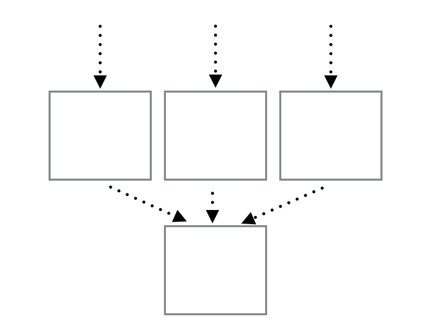

=> Неправильная архитектура
handle_cast(msg, St = #st{redis = Redis}) ->
redis:qp(Redis, "GET key").
St.
=> Нужен пул медленного ресурса
handle_cast(msg, St = #st{redis = Redis}) ->
spawn_link(fun() -> redis:qp(Redis, "GET key") end).
St.

Нужен пул медленных ресурсов
gen_server:call(Pid, message, infinity)
gen_server:call(Pid, message, 5000)
receiver_for_client(ServerPid, SystemId) ->
gen_server:call(ServerPid, {receiver_for_client, SystemId}).
handle_call(all_sessions, _From, St) ->
spawn_link(fun() -> some_module:some_function(St) end).
1) Выполнять все операции внутри gen-server
1) Разделение состояния на независимые куски между ген серверами
2) Несколько генсерверов с идентичным состоянием и пул
erlang:process_info(Pid)
Используем call или шину данных
Логи
lager:error() => fsync
file:open(Path, [append, raw, {delayed_write, ?WRITE_BUFFER_SIZE, ?WRITE_BUFFER_MAX_DELAY}])
/